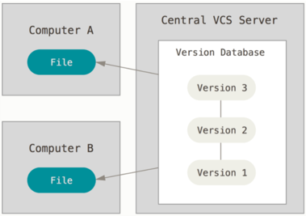
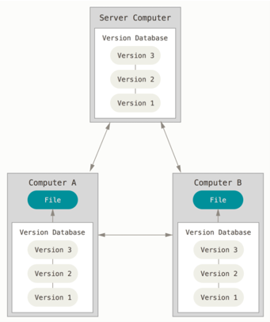

|
 Sistemas de Control de Versiones Centralizados Para Chacon, S. & Straub, B. (2014), el siguiente gran problema con el que se encuentran las personas es que necesitan colaborar con desarrolladores en otros sistemas. Los sistemas de Control de Versiones Centralizados (CVCS por sus siglas en inglés) fueron desarrollados para solucionar este problema. Estos sistemas, como CVS, Subversion y Perforce, tienen un único servidor que contiene todos los archivos versionados y varios clientes que descargan los archivos desde ese lugar central. Este ha sido el estándar para el control de versiones por muchos años. Esta configuración ofrece muchas ventajas, especialmente frente a VCS locales. Por ejemplo, todas las personas saben hasta cierto punto en qué están trabajando los otros colaboradores del proyecto. Los administradores tienen control detallado sobre qué puede hacer cada usuario, y es mucho más fácil administrar un CVCS que tener que lidiar con bases de datos locales en cada cliente. Sin embargo, esta configuración también tiene serias desventajas. La más obvia es el punto único de fallo que representa el servidor centralizado. Si ese servidor se cae durante una hora, entonces durante esa hora nadie podrá colaborar o guardar cambios en archivos en los que hayan estado trabajando. Si el disco duro en el que se encuentra la base de datos central se corrompe, y no se han realizado copias de seguridad adecuadamente, se perderá toda la información del proyecto, con excepción de las copias instantáneas que las personas tengan en sus máquinas locales. Los VCS locales sufren de este mismo problema: Cuando tienes toda la historia del proyecto en un mismo lugar, te arriesgas a perderlo todo. |
Sistemas de Control de Versiones Distribuidos Los sistemas de Control de Versiones Distribuidos (DVCS por sus siglas en inglés) ofrecen soluciones para los problemas que han sido mencionados. En un DVCS (como Git, Mercurial, Bazaar o Darcs), los clientes no solo descargan la última copia instantánea de los archivos, sino que se replica completamente el repositorio. De esta manera, si un servidor deja de funcionar y estos sistemas estaban colaborando a través de él, cualquiera de los repositorios disponibles en los clientes puede ser copiado al servidor con el fin de restaurarlo. Cada clon es realmente una copia completa de todos los datos. Además, muchos de estos sistemas se encargan de manejar numerosos repositorios remotos con los cuales pueden trabajar, de tal forma que puedes colaborar simultáneamente con diferentes grupos de personas en distintas maneras dentro del mismo proyecto. Esto permite establecer varios flujos de trabajo que no son posibles en sistemas centralizados, como pueden ser los modelos jerárquicos., Chacon, S. & Straub, B. (2014).  |